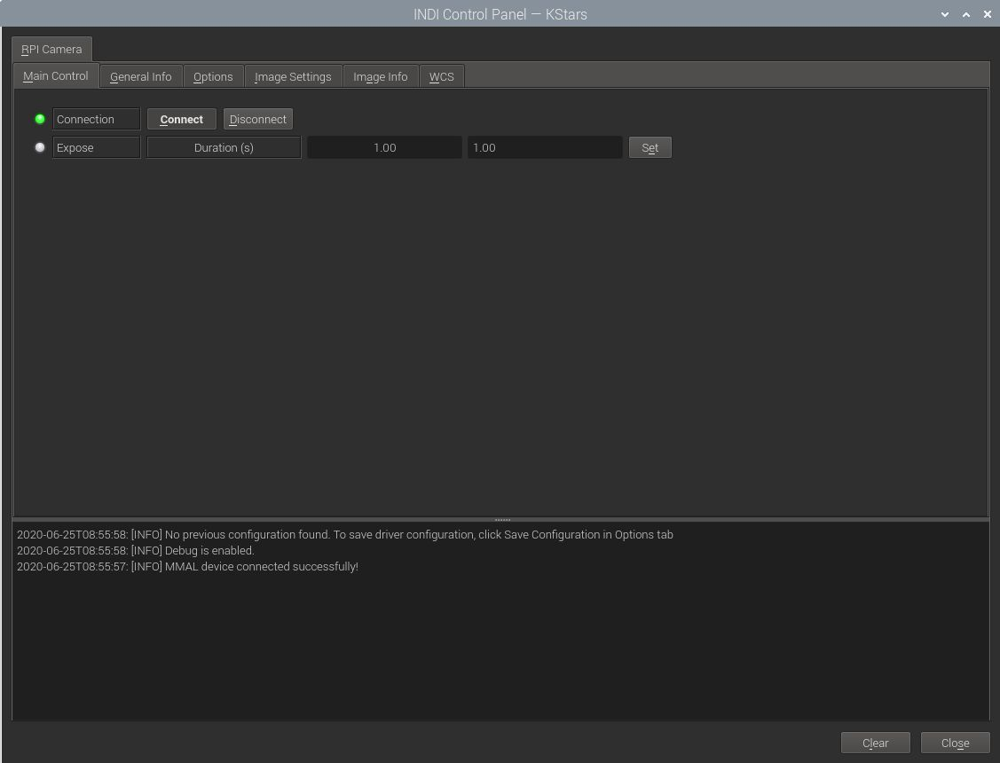
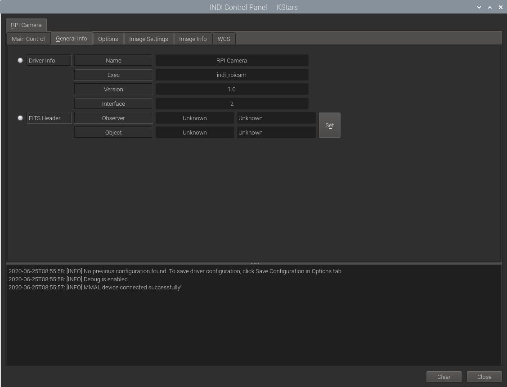
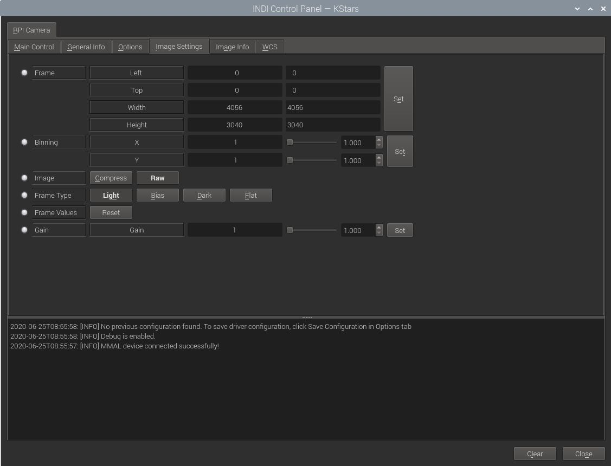

Installation
RPI Camera Driver currently supports the Raspberry Pi High Quality Camera in full raw mode.
Under Ubuntu, you can install the driver via:
sudo add-apt-repository ppa:mutlaqja/ppa
sudo apt-get update
sudo apt-get install indi-raspicam
Features

The driver supports capture and gain adjustment.
The image returned in FITS format is in Bayer BGGR 16 unsigned raw format. Currently with a fixed size of 4056x3040.
To capture a single-frame image, simply set the desired exposure time in seconds and click Set. After the capture is complete, it should be downloaded as a FITS image.
Operation
Connecting to RPI Camera
Before connecting the camera to the RPI camera CSI port make sure the camera port is enabled on the RPI. Run raspi-config and
under the choice "Interfacing Options" select to enable the camera.
General Info

This provides general information about the currently running driver and driver version. It also lets you set the Observer and Object Information for the FITS Header.
Options

The Options tab contains settings for default file locations, upload behavior, and debugging. The polling period for this driver should be kept as is unless you need to reduce it for a specific reason.
- Debug: Toggle driver debug logging on/off
- Configuration: After changing driver settings, click Save to save the changes to the configuration file. The saved values should be used when starting the driver again in the future. The configuration file is saved to the user home directory under .indi directory in an XML file.(e.g. ~/.indi/camera_name.xml)
- Snoop Device: The camera driver can listen to properties defined in other drivers. This can be used to store the relevant information in the FITS header (like the mount's RA and DE coordinates). The respective drivers (Telescope, Focuser..etc) are usually set by the client, but can be set directly if desired.
- Telescope: Toggle between Primary and Guide scope selection. This selection is required in order to calculate World-Coordinate-System (WCS) values like Field-Of-View (FOV). When WCS is enabled, the FITS header is populated with WCS keywords that enable clients to map the sources in the image to physical coordinates in the sky. Usually, you do not need to toggle this setting manually as it is usually set by the client automatically
- Upload: Selects how the captured image is saved/uploaded?
- Client: The image is uploaded the client (i.e. Ekos or SkyCharts)
- Local: The image is saved to local storage only.
- Both: The image is saved to local storage and also uploaded to the client.
- Upload Settings: Sets the local desired directory and prefix used to save the image when either the Local or Both upload modes are active. The IMAGE_XXX is automatically replaced by the image name where the XXX is the image counter (i.e. M42_005.fits). The driver scan the local storage and increments the counter automatically when a new image is captured and stored.
Image Settings

NOTE! None of framing- or binning settings are actually used by the driver yet! Nor is compression supported.
In the Image Settings tab, you can configure the framing and binning of the captured image:
-
Frame: Set the desired Region-Of-Interest (ROI) by specifying the starting X and Y positions of the image and the desired width and height. It is recommended to set use even numbers only to enable binning if required. The ROI values are indenepdent of the binning used.
-
Binning: Set the desired binning.
-
The usually supported Image compression can be turned on in image settings to compress FITS images. This might require more processing but can reduce the size of the image by up to 70%. The uploaded image would have an extenstion of .fits.fz and it can be viewed in multiple clients like KStars.
-
The Frame Type property is used to mark the frame type in the FITS header which is useful information for some processing applications. If there an electronic or mechanical shutter, the driver closes it automatically when taking dark frames.
-
To restore the ROI to the default values, click on the Reset button.
-
The Gain value is the cameras analog gain value from 1 to 16.
Image Info

The image info tab contains information on the resolution of the CCD (Maximum Width & Height) in addition to the pixel size in microns. If the camera supports Bayer mask, then the bayer filter and offset can be set here. These are usually set automatically by the driver, but can be adjusted manually if needed.
Issues
There are some features currently in development:
- User defined framing.
- Exposures longer that 1 second.
- Exposure abort is currently not implemented.
There are no known bugs for this driver.
If you found a bug, please report it at INDI's Issue Tracking System at Github.